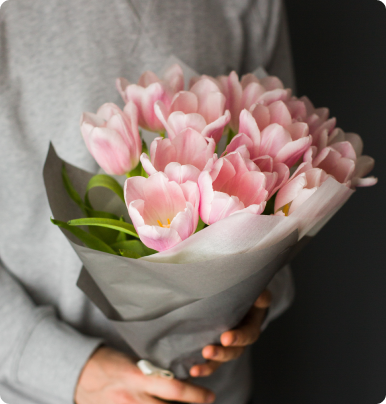
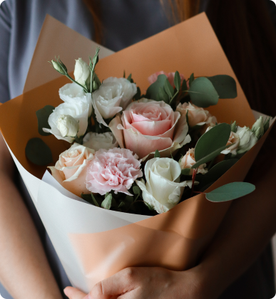
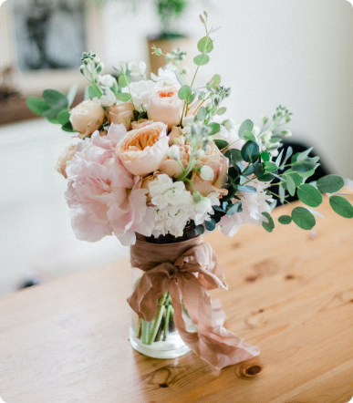
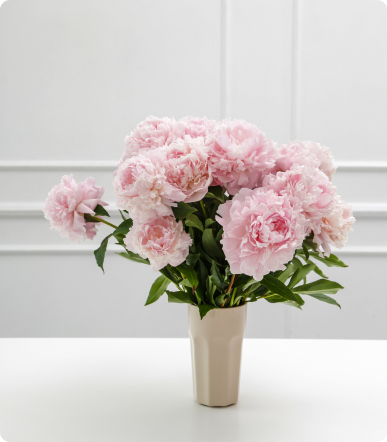
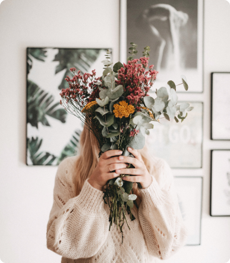

Авторские букеты в Петербурге
Оригинальные свежие букеты с доставкой по всему городу
Смотреть каталог  - Быстрая доставка
- Можем собрать букет и передать его в доставку всего за час.
- Всегда свежие цветы
- Тщательно следим за состоянием цветов, а опытные флористы отбирают для букетов каждый цветок.
- Отправляем фото цветов
- Перед доставкой сделаем фотографию букета и отправим вам.
Популярные букеты
Букет «Нежность»
Элегантный букет, который станет отличным подарком на день рождения или юбилей.
30 × 40 см
3600 руб.
- Свадебные букеты
- Букеты для невест
- Букеты с пионами
- Букеты с сезонными пионами
- Выбрать букет
- Букеты в ассортименте



Скидка 10% на первый заказ
Если заказываете у нас букет впервые — при оформлении заказа введите промокод «Botanika2021» и получите скидку 10%.
4 шага к идеальному букету
- Заказ
- Выбирите понравившейся букет из каталога и оформите заказ
- Уточнение деталей
- Наш флорист позвонит вам после оформления заказа, чтобы уточнить детали
- Оплата
- Оплатить заказ можно онлайн на сайте или при получении
- Доставка
- Курьер позвонит за час до прибытия и доставит заказ вовремя
Следите за нашими новостями
Подписывайтесь на наши соцсети и узнавайте о новинках и акциях первым.
Отзывы
- Всё очень понравилось! Быстрое оформление заказа, выбор удобного времени доставки. Всем большое спасибо!
- Марина
- Внимательные флористы, вежливые. Магазин находится прям рядом с метро. Букет очень понравился, буду ещё заказывать!
- Татьяна
- Выбор букетов на любой вкус и цену. Бывают хорошие скидки, а флористы всегда помогут и точно соберут красивый букет!
- Ольга
Мы ждем вас
- Приходите к нам:
- Санкт-Петербург, ул. Большая Конюшенная, 19
- Режим работы:
- Пн-Вск, с 9-00 до 20-00
- Позвоните нам:
- + 7 (812) 983-47-19
- Напишите нам:
- info@botanika.ru